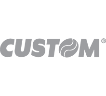
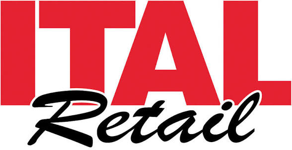
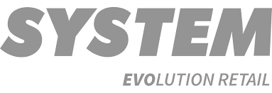

FP-90III RT
Soluzione fiscale professionale per postazioni integrate.
Scheda ufficiale →LONGO · IL TUO PUNTO CASSA, CON UN REFERENTE DIRETTO
Registratori telematici, stampanti fiscali e sistemi touch per negozi, bar e ristoranti. Acquisto o noleggio, con installazione e assistenza tecnica a Roma e provincia.
Per un preventivo mirato, indicaci tipo di attività, comune e se cerchi acquisto, noleggio o assistenza. Contatto tecnico diretto · 09:00–19:00.
Non sai quale scegliere? Prepara la tua richiesta →Aggiornamenti, verificazione periodica biennale e assistenza inclusi. Con il piano da 30 € + IVA al mese hai anche i pezzi di ricambio.
Avvio da 150 € + IVA. Scegli una formula adatta alla tua attività e distribuisci la spesa nel tempo.
Noleggio a Roma: scopri i piani



Soluzione fiscale professionale per postazioni integrate.
Scheda ufficiale →Registratore telematico compatto e moderno.
Scheda ufficiale →Sistema touch all-in-one per il punto vendita.
Scheda ufficiale →Scelta della soluzione più adatta alla tua attività.
Configurazione, collegamenti e avviamento.
Supporto tecnico per la messa in servizio dell'RT.
Supporto tecnico su Roma e provincia.
Installazione, configurazione, fiscalizzazione e assistenza tecnica con un unico referente.
Configuriamo sistemi completi per retail, ristorazione e attività di servizio.
Installazione, configurazione e assistenza su registratori telematici, stampanti fiscali e sistemi touch.
Da 20 € + IVA al mese, con assistenza, aggiornamenti e verificazione biennale inclusi. Avvio da 150 € + IVA. Disponibile anche il piano da 30 € + IVA al mese con ricambi.
Scopri il noleggio registratori di cassa a RomaUn registratore di cassa deve adattarsi al lavoro quotidiano della tua attività. Longo ti aiuta a scegliere tra registratori telematici compatti, stampanti fiscali e postazioni touch per negozi, bar e ristoranti di Roma e provincia.
Scopri il servizio →La stampante fiscale è parte della tua postazione di vendita. Per attività a Roma e provincia, Longo propone consulenza sulla scelta del dispositivo e sul collegamento con il sistema touch o il software gestionale.
Scopri il servizio →Un software gestionale deve rispondere alle esigenze della tua attività e lavorare con il punto cassa. Longo segue negozi, bar, ristoranti e attività di servizio a Roma e provincia nella scelta e nella configurazione della soluzione.
Scopri il servizio →Per ordinare i rotoli termici del tuo punto cassa è importante scegliere il formato compatibile. Longo raccoglie richieste da attività di tutta Roma e provincia per rotoli e accessori di consumo.
Scopri il servizio →Longo offre assistenza sul posto, installazione e configurazione per le attività di Roma e della provincia di Roma. Per concordare un intervento chiama il 06 21129078 e indica il comune e il problema della tua postazione.
Scopri il servizio →Sede operativa in Viale Europa, con consulenza per vendita, noleggio e assistenza del punto cassa.
Registratori di cassa Roma EUR →Soluzioni per negozi, bar e ristoranti con configurazione, installazione e supporto tecnico.
Registratori telematici a Roma →Supporto su registratori di cassa, stampanti fiscali e sistemi touch a Roma e provincia.
Assistenza registratori a Roma →Longo Alfredo
Viale Europa snc
00144 Roma (RM)
P.IVA 12462251005
POCHI DETTAGLI, UNA RICHIESTA PIÙ UTILE
Scegli la tua attività e ciò che ti serve. Prepariamo un messaggio che potrai controllare e inviare a Longo su WhatsApp o email.
Questo sito raccoglie richieste commerciali: non effettua addebiti e non conferma ordini automaticamente.